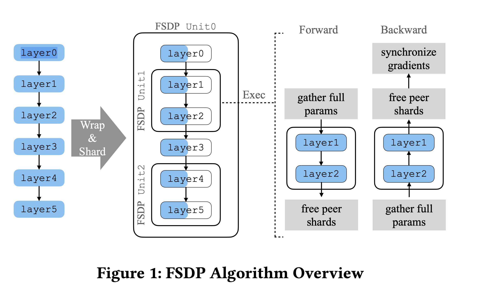

Evaluation of Pre-training LLMs on Supercomputers
Table of Contents
Evaluates the Time, Memory and Energy cost of traning LLMs on SuperComputers.
1. Contributions/Scope
[Page 2]
- Performance analysis of Training LLMs: Give theoretical equations for
- Memory, Bandwidth
- Time
- Energy
- Projection of Cost : Develop cost models for train time and energy projection [Table 2]
We conduct a first-of-its-kind performance analysis to understand the time and energy cost of pre-training LLMs on the Department of Energy (DOE)’s leadership-class supercomputers [pg. 1]
2. Setup
3. Big LLMs require distributed training
Big LLMs have high computation and memory requirements and they don't always fit in a single GPUs. Even if they do, scaling up the training requires multiple GPUs. This means a distributed approach to training is required. But how to build and train such system is not straightforward [~ pg. 1].
4. Parallelism Approach for Distributed Training of LLMs
- Data Parallelism:
- Pipeline Parallelism: Gpipe
- Tensor Parallelism: Megatron
Memory Requirements:
- Model Parameters (\(M_p\))
- Optimizer States (\(M_o = 2 \times M_p\); for Adam)
- Gradient (\(M_g = 2 \times M_p\))
- Residue/Overheads (\(M_e = M_p\))
4.1. Data Parallel
[Page 5]
Each model replica processes different batch of data and then synchronize the backward pass.
4.1.1. Distributed Data Parallel
[Paper]
- Model is replicated across all devices
- Gradients are communicated to keep the models in sync
Advanced Techniques:
- Overlapping communcation with computation
- Bucketing gradients
- Skipping gradient synchronization
By proper tuning, near linear scaling upte 256 GPUs was obtained.
But, it requires model to fit in a single GPU.
4.1.2. FSDP (Fully Sharded Data Parallel)
4.2. Pipeline Parallel
- Different layers of models are stored in different devices
- Computation proceeds on a device and the results are passed to next device to computed next layer
- Micro Batching is done to hide pipeline bubble
Figure 1: Pipeline Parallelism Animation
Figure 2: Pipeline Bubble [Source: siboehm.com]
4.3. Tensor Parallel
Parallel processing of a layer by tensor decomposition.
- Multiplying each column with the input separately
- Collect the results from GPUs and concatenate together
Figure 3: Tensor Parallelism
Figure 4: Tensor Parallelism Across Layers [docs.nvidia.com]
4.3.1. Megatron
https://github.com/NVIDIA/Megatron-LM
- A PyTorch based library by NVIDIA
- Providing GPU-optimized techniques for Deep Learning
- Layers (attention mechanism, normalization layers)
- Activation recomputation, distributed checkpointing
- Model parallelism techniques (tensor, sequence, pipeline, context, and MoE expert parallelism)
EleutherAI implemented an OpenSource version of DeepSpeed-Megatron. The authors ported it to AMD for benchmarking. [Page 8]
5. Experimental Setup (& Memory, Bandwidth Analysis)
2 supercomputers, 2 training frameworks [pg. 2]
SuperComputers:
- Crusher Supercomputer: AMD MI250X
- Summit Supercomputer: NVIDIA V100
Traning frameworks (both PyTorch based Distributed Traning Methods) [pg. 5]
- Fully Sharded Data Parallel (FSDP)
- DeepSpeed-Megatron [pg. 5]
5.1. FSDP (Fully Sharded Data Parallel)
[pg. 6][PyTorch Docs][FSDP Paper]
Used in the experiments with Crusher supercomputer.
- Model is not replicated across all devices
- Model Parameters, Optimizer States and Gradients are shared among devices
5.1.1. FSDP Algorithm
- Model is shared (across layers ) in units
- For computation
- each unit is fully materialized (i.e. unshared)
- Computation is done
- then it is shared to free memory

Figure 5: FSDP Algorithm (Source: FSDP Paper - Page 3)
5.1.2. Memory requirement is thus
But communication is increased compared to DDP (by 1.5x [pg. 7], See ZeRO 7.2.2).
\begin{equation*} C \sim 3 \times M_p \end{equation*}5.1.3. FSDP in Crusher

Figure 6: FSDP
5.2. DeepSpeed-Megatron
[pg. 7]
Used in the experiments with Summit supercomputer.
Uses Data Parallelism (DP), Pipeline Parallelism (PP) and Tensor Parallelism (TP).
5.2.1. Details
[pg. 7]
- Tensor Parallelism: is within a node
- Pipeline Parallelism: is in 2 stages. Each on a node with half of model layers
- Data Parallelism: ZeRO (stage 1, i.e. optimizer states) are sharded among the remaining level of parallelism (i.e. \(N_{devices}/(PP \times TP)\)). To avoid excessive communication.
Thus memory requirement per device is:
\begin{equation*} M = \frac {M_p} {PP \times TP} + \frac {M_o} {DP} + \frac {M_g} {PP \times TP} + M_e \end{equation*} \begin{equation*} M = \frac { 2 \times (DP + PP + + 1)} {N_{devices}} M_p \end{equation*}And Communcation volume is [Eqn 6]:
\begin{equation*} C \sim \big( \frac {TP} {N_{devices}} + 1 \big) \times 2 \times M_p \end{equation*}5.2.2. Fit the model and then use Data Parallelism
[pg. 7]
Because the scaling efficiencies of pipeline and tensor parallelism are worse than data parallelism (that is, they require more communication), the best scaling strategy is to find the minimum number of nodes that can fit the model in memory with model parallelism, and to apply the remaining resources to data parallelism.
6. Runtime and Energy Analysis
6.1. Compute scales with square of Parameters
Optimal Token counts = 20 x Parameters count
Compute ∼ 6 × Parameter counts × Token counts [Eqn 1]
Compute ~ 120 × (Parameter counts)2 [Eqn 7]
The total number of compute operations needed for the optimal training (20 tokens per parameter) [16] of LLMs is quadratically proportional to the number of model parameters (P) [pg. 8]
6.1.1. Token:Parameters = 20:1 is Optimal
It is recommended to maintain a 20 to 1 ratio of tokens vs. number of parameters to be compute optimal [pg. 2]
6.2. Compute Time ~ 120 P2 / R
- \(T_{FLOPS}\) is total FLOPS required
- \(R_{FLOPS}\) is the FLOPS per second the system can do
6.3. Energy
- \(R_{watt}\) is the avg power usage
7. Evaluation
Now do the experiments and check against theoritical models (equations)
7.1. Scaling Analysis
Before doing extensive experiments the author find the optimal hyperparameters of the System.
Summit (DeepSpeed-Megatron)
- PP=1, TP=12, DP=N / (PP × TP) gave best performance [Section 4.2.2]
Crusher (FSDP)
7.2. Memory & Bandwidth
- Measurements of memory usage and bandwidth requirement are consistent with theoritically derived formulas
Compared to our projections (Eqs. 3 and 6), the measurements are consistent, as shown in Fig. 7. [pg. 12]
7.3. Power
175B Model
| Summit | Crusher | |
|---|---|---|
| Avg. Power (Watt) | 84 | 408 |
| Efficiency (Tflops/Watt) | 0.165 | 0.235 |
1T Model
| Summit | Crusher | |
|---|---|---|
| Avg. Power (Watt) | 66 | 151 |
- For 1T Model power consumption is low because more time was spent in communication [Page 13]
7.4. Train time and Energy Projections
It is listed in [Table 2]
- The values for Frontier are extrapolated from the values for Crusher.
- For 1T model values for 1x Data and 20x data is shown.
Figure 7: Table 2
7.4.1. Crusher is more energy efficient
In general, MI250X-based Crusher is more energy-efficient for training LLMs, and the advantage grows rapidly for model sizes beyond GPT3. [pg. 16]
7.4.2. LLM workload is 4x more efficient that traditional workloads
We observe that these values for training LLMs are over 4× more power efficient than executing traditional simulation workloads (∼ 52 GFLOPS/Watt).
8. Conclusions
8.1. Software improvements might change the projections
- Message compression
- Model Pruning
- Autotuning of parallel strategies
It’s important to note that the field is rapidly evolving, with ongoing advancements that can further reduce communication costs. For instance, techniques such as message compression, model pruning, and autotuning of parallel strategies [38] have shown promise in significantly mitigating the network bandwidth requirements for scaling up LLM training. [pg. 16]
8.2. Large per node memory and communication bandwidth required
- Crusher: 128 GB per GPU (2 die) [Source: Pg. 17]
- Summit : 32 GB per GPU [Source: Internet]
Therefore, for LLM training, larger amounts of per node device memory and communication bandwidth lead to obtaining better performance, but the specific requirements depend on the model size. [pg. 16]
8.3. Current Memory Bandwidth is limiting for Crusher
- For achieveable performance: 94 GB/s
- Currently available: 25 GB/s
For theoretical peak and achievable performance, the minimum per-device communication bandwidth needed is 37 and 94 GB/s, respectively. The current 25 GB/s per-device on Crusher is not sufficient to support lin- ear scaling for training GPT 1T model [pg. 17]
8.4. Frontier is promising for GPT3 size model training
Crusher is same as Frontier but with less nodes.
Feasibility analysis and practical guide in building foundation models for sciences. Our results indicate that Frontier is a promising platform for GPT3-size model training [pg. 18]
9. Thank you!
10. Misc
10.1. DL scales with model and data
[pg. 4] Deep Learning scales with Model size and data
Total number of FLOPs required for each training epoch is
\begin{itemize} T_{FLOPS} \sim 6 \times P \times D \end{itemize}10.2. Nickel
See NVIDIA Collective Communication Library (NCCL, prononunce "Nickel") documentation for meaning of Allreduce, Allgather, ReduceScatter, …
Compared to DDP, where only an Allreduce during each backward propa- gation is required, FSDP requires an Allgather for the forward pass and both an Allgather and a ReduceScatter for the backward pass. [pg. 6]
10.3. Mistakes
- Page 5 ZeRO optimzation steps is wrongly ordered. See original ZeRO paper for correct order.
10.4. Model Parallel = PP or TP
Model Parallel = Pipeline parallel or Tensor Parallel i.e. splitting the model [https://huggingface.co/docs/transformers/v4.13.0/en/parallelism]
10.5. FSDP = ZeRO Stage 3
- FSDP and ZeRO stage 3 is the same [https://uvadlc-notebooks.readthedocs.io/en/latest/tutorial_notebooks/scaling/JAX/data_parallel_fsdp.html#Parameter-Sharding]

{kind=link}